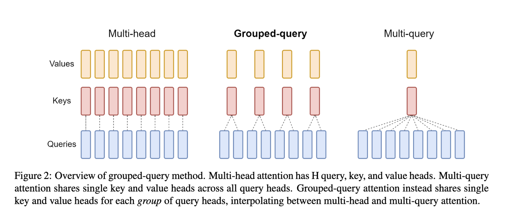

基于 Llama2 的财报分析大语言模型
项目简介
目标产品概述
一个旨在深度解析上市公司年报的对话交互智能系统。面对金融文本中的专业术语与暗含信息，我们致力于用AI实现专家级别的金融分析。
项目动机
在AI领域，虽然已在文本对话取得进展，但真正的金融交互场景仍然是一个巨大挑战。考察过市面上的大多数商业ai金融对话软件或者开源模型后，发现他们在专业性，助手性（是否能满足多维度的金融类助手性任务），交互深度方面均有所欠缺。
问题和创新点
为了简化问题和对关键问题进行定点解决，我们的目标是：
- 针对上市公司年报建立，微调，优化出一个具有针对性的大语言模型
- 其他现有创新点包括：
- 针对单gpu进行了优化，使其甚至能在安卓虚拟框架下运行；
- 有类agent体系能更广泛的满足定制化需求。
上市公司年报为投资者呈现了公司的经营状况、财务状况和未来规划，投行和证券研究团队在这方面的分析解读历来是工作重心，投入了大量人力和资源，金融专业知识和市场直觉是解读的关键，而我们的目标是通过AI技术让这一过程变得更简单、更准确、更便宜，加速企业的投资研究和市场分析，解放投资研究部门的产能，同时也帮助每一个关注市场的投资者都能够打穿信息壁垒。
项目先行版本现定流程
数据准备流程
数据准备的流程可以细分如下：
- PDF文本和表格提取：使用如pdfplumber、pdfminer等工具包提取PDF文件中的文本和表格数据。
- 数据切分：根据PDF文件的目录、子目录和章节信息，对内容进行精确的切块处理。
- 构建基础金融数据库：依据金融知识和PDF内容，设计专业的金融数据库字段和格式。例如，定义资产负债表、现金流量表和利润表等。
- 信息提取：使用大模型的信息提取能力和NLP技术来抽取对应的金融字段信息。例如，使用json方式输出目录的内容，其中章节的名称作为key，页码作为value。同时，请详细地抽取表格内的数据，以JSON格式输出。
-
构建金融知识问答库：结合构建的金融数据库，应用大模型构建基础的金融问答库。例如：
{"question"："某公司2021年的财务费用为多少元？", "answer": "某公司2021年的财务费用为XXXX元。"} // (1) prompt:用多种句式修改question及answer的内容。 {"question":"为什么财务费用可以是负的？", "answer": ""} // (2) prompt：请模仿上面的question给出100个类似的问题与对应的答案，用json输出。 -
构建向量库：借助于如Word2Vec、Text2Vec等技术，从原始文本数据中提取出语义向量。使用pgvector这种基于PostgreSQL的扩展来存储和索引这些向量，从而建立起一个可供高效查询的大规模向量库。
- 应用：结合向量库、大模型、langchain等工具，提升应用效果。
为提高团队工作效率，给工程整体绘制一个清晰的框架蓝图，我们构建了如图所示的工作流：

PDF转TXT
extract_table()、find_tables() 是 pdfplumber 中用于从 PDF 中提取表格数据的函数。该函数可以接受一个可选的参数字典，用于更精细地控制表格数据的提取过程。下面介绍一些常用的参数，仅供参考：
vertical_strategy：用于指定垂直方向上的表格线提取策略，可以是 “lines”、“text” 或 “mixed” 中的任意一种，默认值为 “lines”。horizontal_strategy：用于指定水平方向上的表格线提取策略，可以是 “lines”、“text” 或 “mixed” 中的任意一种，默认值为 “lines”。snap_tolerance：用于指定在表格提取过程中两个元素之间的距离阈值，如果它们之间的距离小于该值，则会被视为同一元素。默认值为 3。join_tolerance：用于指定在表格提取过程中两个单元格相连时的距离阈值，如果它们之间的距离小于该值，则它们将被合并为同一个单元格。默认值为 2。edge_min_length：用于指定在表格提取过程中一个元素的边缘与页面边缘之间的距离阈值，如果它们之间的距离小于该值，则该元素将被忽略。默认值为 10。min_words：用于指定一个单元格必须包含的最少文本块数目，默认值为 1。
snap_x_tolerance：用于在表格提取过程中校正列位置的参数，允许水平方向上的一些偏离。默认值为None。snap_y_tolerance：用于在表格提取过程中校正行位置的参数，允许垂直方向上的一些偏离。默认值为None。intersection_x_tolerance：用于调整表格列位置的参数，允许一些列交叉或合并。默认值为None。
因为pdf2txt非常的复杂多变，且麻烦。故我们组在以上pdf2txt程序的使用过程中进行了一定的创新举措和微调处理。
先glob读取文件排序，再送入15个进程的进程池进行多进程处理。
按pdf.pages页遍历处理，每页通过page遍历存储，通过 extract_text_and_tables 函数提取文本和表格，其中表格使用 page.find_tables() 获取到表格数据，遍历表格开始处理，
一旦有表格了，那么表格和文本都需要提取，通过 check_lines 函数，提取文本，得到按行的文本，通过 new_table = table.extract() 合并或者去掉一些多余的项，进而得到表格文本；如果没找到表格，调用 check_lines 得到文本，并处理页眉页脚。
更加重要的是，我们所做的大模型是针对年报数据的，所以文本转换也必须针对年报类文件，这提供了方便。但问题在于这样有针对性的代码里用了很多正则，碰到某些财报必须人工调整靠肉眼看总结出来。
经过暑假一个月的陆续调整以及低薪聘请同学做人工标注我们基本积累出共计约一万份财报结构化数据。
最后我们把输出按行保存 JSON 格式文本到alltxt2目录中，文件名变为.txt后缀。
输出效果示例：
{"page": 7, "allrow": 165, "type": "excel", "inside": "['受的政府补助除外）', '', '', '', '']"}
{"page": 7, "allrow": 166, "type": "excel", "inside": "['委托他人投资或管理资产的损益', '11,983,529.98', '9,660,508.21', '4,469,117.34', '']"}
{"page": 7, "allrow": 167, "type": "text", "inside": ""}
{"page": 7, "allrow": 168, "type": "页脚", "inside": "7"}
{"page": 8, "allrow": 171, "type": "excel", "inside": "['除同公司正常经营业务相关的有效套期保', '', '', '', '']"}
{"page": 8, "allrow": 172, "type": "excel", "inside": "['值业务外，持有交易性金融资产、衍生金', '', '', '', '']"}
数据切分
切分得到的数据应分类为如下的类别：
- 基础信息：例如：公司名称，年报撰写时间等等；
- 财务数据：例如：资产负债表等等；
- 综合信息：例如：财务指标等等；
数据处理
为保障大模型能解决基本的数据分析问题，我们还需要基本的数据处理，例如：
- 计算基础公式：例如营业成本率等等；
- 计算增长率；
- 计算行业均值和排名。
金融数据库构建
信息存入
为将数据库加入模型整个的工作流程，我们选择将数据存入 SQL 、Mongo 和 ES 中，通过先前的数据处理后，可将建表写入数据存储到数据库当中，为随后的数据库协同工作流作准备。
数据库协同工作流
由于算力缺乏（数据量显然也远远不够）我们所能采用的策略是在小量数据的引导和针对化调整现有开源大模型之后，针对分析企业财报，回答金融问题，给出投资分析的细分场景，我们在实际推理回答中，采用检索增强生成（Retrieval Augmented Generation，RAG）技术，把在数据召回阶段所获取的行业知识（通过检索向量知识库）和具体数据（通过查询关系型数据库），结合用户的问题，以及其他上下文与约束条件，一起发给微调后的问答模型，获得更加准确的答案，即微调该问答模型，让模型更懂行业知识。
更进一步，我们采用prompt设计+微调的方式进一步特化其为金融财报类大模型，以此来对用户的问题进行回答。
- 首先，模型会对用户的提向进行分类，判断用户是想问基本公司信息和财务报表信息还是询问公司年报的相关内容或者是想对整体数据进行查询分析。
- 对于查询或询问类的提问，模型需要对用户提向进行意图识别，提取问题的关键词，然后对报表或者年报进行相关信息召回，通过prompt 设计将召回的报表字段和年报内容交由模型进行处理回答。
- 对于统计类分析，主要通过模板和大模型改写的方式来构建 SQL 训练数据，对模型进行微调，增强模型 NL2SQL 的能力，然后直接执行 SQL 来获取分析结果。
结果评估方法
| \(\max_{\text{similar}}(\text{sentence}_1,\text{sentence}_2,\text{sentence}_3)\) | 无基础信息及关键词 |
| \(0.25+0.25+\max_{\text{similar}}(\text{sentence}_1,\text{sentence}_2,\text{sentence}_3)\times 0.5\) | 基础信息正确，关键词正确 |
| \(0.25+0+\max_{\text{similar}}(\text{sentence}_1,\text{sentence}_2,\text{sentence}_3)\) | 基础信息正确，关键词错误 |
| \(0\) | 基础信息错误 |
模型简介
大语言模型的金融应用概述
随着人工智能技术的快速发展，金融机构开始探索人工智能新技术的应用，并引入各类大语言模型作为新的解决方案。大语言模型具有强大的自然语言处理能力，可在多个方面助力金融行业的发展。
- 大语言模型可以解决金融业信息分散和不对称、多个系统之间数据的整合和交互不够等问题，能够有效地理解和处理复杂的金融数据，并提供更直观、便捷的信息查询和解释服务，有助于提高金融机构内部的运营效率和决策质量。
- 大语言模型能够促进金融行业更好地利用人工智能技术，通过智能化的交互界面提供更直接、高效的金融服务，推动金融业进一步去中介化，降低传统金融中介机构高额的交易成本并优化复杂的服务流程，为金融机构和客户提供便利、高效的金融服务。
- 得益于良好的自然语言处理能力，大语言模型在金融业的应用还可以服务于情感分析、市场预测，为企业与个人提供较为专业的投资建议。
Llama2模型
Llama2模型是Meta AI正式发布的最新一代开源大模型。它的最高参数达到700亿，在2万亿tokens上进行训练，并且是开源免费可商用的，推动了大型语言模型在开源界的繁荣发展。其具有以下优势：
- 高效性：Llama2可以在相对较少的计算资源上进行训练，这降低了训练成本和时间。同时，它还可以支持更多的自然语言任务，包括问答、文本生成、摘要生成等。
- 灵活性：Llama2可以轻松地适应各种自然语言处理任务，并且可以与其他模型进行集成，以提高性能。此外，它还可以根据特定需求进行微调，以进一步提高性能。
- 可扩展性：Llama2支持多语言和多模态数据，这意味着它可以处理不同语言和类型的数据，包括文本、图像、音频等。这为跨语言和跨模态的自然语言处理任务提供了更大的灵活性。
- 开放性：作为开源模型，Llama2的代码和数据都是公开的，这促进了学术和工业界之间的合作和创新。此外，它也为研究人员提供了一个平台，以探索和开发新的自然语言处理技术。
NKSM模型简介
本模型(NKSM)基于预训练的 Llama2 模型，利用 ubuntu 系统服务器进行模型部署，运用 LoRA 方法对模型进行微调，使之具备统计与金融方面的专业分析能力，旨在实现以下功能：
- 信息检索功能，我们将基于 MySQL 建立金融财报方面的知识库，录入70GB的已标注财报信息并将其接入 NKSM 模型，从而满足用户对企业运营信息的检索需求。
- 基础问答功能，NKSM 模型就用户所提出的基础金融问题进行回答，向用户解释部分金融术语的含义，实现基本金融知识的科普。
- 金融计算功能，用户可以就部分金融统计量向 NKSM 模型进行提问，NKSM 模型将基于知识库中已有的信息进行高阶数据的分析与相关统计量的计算，并对结果进行简要分析。
- 预测与建议功能，NKSM 模型可以基于知识库中已标注的数据生成投资建议，对用户的投资行为进行一定程度上的指导。
- 分析与分类功能，NKSM模型可以分析用户输入的企业或个体金融行为信息，对其进行分类，从而对行为主体的金融信誉及经济状况进行分类评估，并向用户提供其在各类现行国际标准下的信用评级。
服务器信息
- 操作系统：Linux tommy 5.15.0-76-generic
- 系统版本：Ubuntu 22.04.2 LTS \\n \\l
- 处理器架构：x86_64
NKSM模型信息
- 基础模型：Llama2
- 训练数据集：2万亿token
- 参数量：70B
- 模型结构：transformer(decoder-only)
- 神经网络架构：前馈算法
- 微调方法：lora监督微调
数据集信息
数据集JSON样式示例
{"id": 0, "question": "2021年其他流动资产第12高的是哪家上市公司？", "answer": "2021年其他流动资产第12高的公司是苏美达股份有限公司。"}
{"id": 1, "question": "注册地址在重庆的上市公司中，2021年营业收入大于5亿的有多少家？", "answer": "2021年注册在重庆，营业收入大于5亿的公司一共有4家。"}
{"id": 2, "question": "广东华特气体股份有限公司2021年的职工总人数为？", "answer": "2021年广东华特气体股份有限公司职工总人数是1044人。"}
{"id": 3, "question": "在保留两位小数的情况下，请计算出金钼股份2019年的流动负债比率", "answer": "2019金钼股份流动负债比率是61.10%。其中流动负债是1068418275.97元；总负债是1748627619.69元；"}
{"id": 4, "question": "2019年负债总金额最高的上市公司为？", "answer": "2019年负债合计最高的是上海汽车集团股份有限公司。"}
{"id": 5, "question": "2019年总资产最高的前五家上市公司是哪些家？", "answer": "2019年资产总计最高前五家是上海汽车集团股份有限公司、中远海运控股股份有限公司、国投电力控股股份有限公司、华域汽车系统股份有限公司、广州汽车集团股份有限公司。"}
{"id": 6, "question": "2020年营业收入最高的3家并且曾经在宁波注册的上市公司是？金额是？", "answer": "注册在宁波，2020年营业收入最高的3家是宁波均胜电子股份有限公司营业收入47889837616.15元；宁波建工股份有限公司营业收入19796854240.57元；宁波继峰汽车零部件股份有限公司营业收入15732749552.37元。"}
{"id": 7, "question": "注册地址在苏州的上市公司中，2020年利润总额大于5亿的有多少家？", "answer": "2020年注册在苏州，利润总额大于5亿的公司一共有2家。"}
{"id": 8, "question": "浙江运达风电股份有限公司在2019年的时候应收款项融资是多少元？", "answer": "2019年浙江运达风电股份有限公司应收款项融资是51086824.07元。"}
{"id": 9, "question": "神驰机电股份有限公司2020年的注册地址为？", "answer": "2020年神驰机电股份有限公司注册地址是重庆市北碚区童家溪镇同兴北路200号。"}
{"id": 10, "question": "2019年山东惠发食品股份有限公司营业外支出和营业外收入分别是多少元？", "answer": "2019年山东惠发食品股份有限公司营业外收入是1018122.97元；营业外支出是2513885.46元。"}
{"id": 11, "question": "福建广生堂药业股份有限公司2020年年报中提及的财务费用增长率具体是什么？", "answer": "2020福建广生堂药业股份有限公司财务费用增长率是34.33%。其中，财务费用是7766850.48元；上年财务费用是5781839.51元。"}
{"id": 12, "question": "华灿光电股份有限公司2021年的法定代表人与上年相比相同吗？", "answer": "不相同，华灿光电股份有限公司2020年法定代表人是俞信华，2021年法定代表人是郭瑾。"}
{"id": 13, "question": "请具体描述一下2020年仲景食品控股股东是否发生变更。", "answer": "2020年，仲景食品控股股东没有发生变更。"}
{"id": 14, "question": "什么是其他债权投资？", "answer": "其他债权投资是指企业或机构投资者通过购买债券、贷款、定期存款等金融产品获得的固定收益。这些金融产品通常由政府、公司或其他机构发行，具有一定的信用等级和风险。\n\n其他债权投资是企业或机构投资组合中的一部分，通常用于稳定收益和分散风险。与股票投资相比，其他债权投资的风险较低，但收益也相对较低。\n\n其他债权投资的管理和投资策略与其他资产类别类似，包括分散投资、风险控制、收益最大化等。然而，由于其他债权投资的种类繁多，其投资和管理也存在一定的特殊性。"}
NKSM模型原理概要
Transformer结构
本次我们使用的 Llama2 模型结构为 Transformer，其整体结构如图所示。

Transformer结构主要由输入层、词嵌入层、编码器和解码器层、输出层和注意力机制组成。
- 输入层：将输入的句子中的每个词表示成一个向量，然后输入到Transformer模型中。
- 词嵌入层：将输入层的向量作为输入，将每个词转化成一个更高维度的向量，以便模型可以更好地处理这些信息。
- 编码器和解码器层：Transformer模型的核心部分，它包含了若干个编码器和解码器层，负责将输入序列编码成一个稠密的向量表示，然后将这个向量解码成输出序列。
- 输出层：将解码器层的输出转化成输出序列中的词的概率分布。
- 注意力机制：在编码器和解码器层中，注意力机制负责根据当前输入和之前的输出计算出一个权重分布，表示当关注输入序列的不同部分时，解码器应给予不同的权重。
Llama2对结构的改进
Llama 系列大语言模型采用 decoder-only 结构，Llama2 模型采用64个 Decoder 层，每个decoder层如下图所示。

相较于Llama模型，Llama2将transformer中的LayerNorm换成了RMSNorm，Multi-Head Attention由MQA换成了GQA,postionnal由绝对位置编码换成了RotatyEmbedding（RoPE相对位置编码）。
数据标准化方面的改进
在Llama模型中，数据标准化采用LayerNorm法，其公式表达如下： $$ y=\frac{x-E(x)}{\sqrt{Var(x)+\varepsilon}}\times\gamma+\beta $$ 其中，\(\gamma\) 为缩放参数，\(\beta\) 为平移参数。
而 Llama 模型则采用 RMSNorm 法，其公式表达如下：
$$
\overline{a_i}=\frac{a_{i}}{RMS(a)}g_i\quad,\quad RMS(a)=\sqrt{\frac{1}{n}\sum_{i=1}^n a_i^2} $$
相较于 LayerNorm 法，RMSNorm 法有以下优点：
- 计算效率高：RMSNorm 的计算代价较低，尤其适用于小批次的训练数据，而 LayerNorm 在进行每一层的归一化时需要计算每个神经元的均值和标准差，计算量较大，不适用于小批次的数据。综合来看，采用RMSNorm法可以减少了 \(7\%∼64\%\) 的计算时间。
- 更好的收敛速度：由于 RMSNorm 能够有效解决内部协变量偏移问题，它可以加快模型的收敛速度，提高训练效率。而 LayerNorm 虽然也可以加速训练，但效果不如RMSNorm。
- 更广泛的应用领域：RMSNorm 不仅适用于图像分类任务，还可以应用于其他领域，如目标检测、语音识别等。而 LayerNorm 主要应用于神经网络模型的每一层，使用范围相对较窄。
多头注意力模型方面的改进
原始的 MHA 模型 QKV 三部分有相同的头数，且一一对应，实质上是进行线性变换得到输出矩阵，其性能较优但需要消耗大量的算力，算法吞吐量不甚理想。基于这一点，Llama模型采用MQA模型，将KV头数缩减至一个，以些许性能为代价换取\(30\%\sim40\%\)的吞吐量。而Llama2模型则将MQA模型进行改进，推出GQA模型，该模型综合了MHA与MQA的优点，对Q头进行分组，同一组之内的Q头共享一组KV头。三种模型的原理如下图：

位置编码方面的改进
Llama2模型采用相对位置编码。其具体做法是在计算attention score和weighted value时各加入一个可训练的表示相对位置的参数，并且multi head之间可以共享，即：
$$
\begin{aligned}
e_{ij}&=\frac{x_{i}W_q(x_jW_k+a_{ij}^k)^T}{\sqrt{d_{z}}}\\
z_i&=\sum\limits_j \alpha_{ij} (x_jW_v+a_{ij}^v)
\end{aligned}
$$
其中，\(a_{ij}^k,a_{ij}^v\)表示\(x_i\)和\(x_j\)的相对位置信息，所以他们只和 \(i\)和 \(j\) 的差值\(k\)有关。具体如下：
$$
\begin{aligned}
a_{ij}^K&=w^K_{clip(j-i,k)}\\
a_{ij}^V&=w^V_{clip(j-i,k)}\\
\text{clip}(x,k)&=\max(-k,\min(k,x))
\end{aligned}
$$
lora监督微调
自然语言处理目前存在一个重要范式：一般领域数据的大规模预训练，对特定任务或领域的适应（finetune）。
但是随着预训练语言模型越来越大，这个范式存在以下问题：
- 当我们 finetune 大模型时，由于训练成本太高，不太可能重新训练所有模型参数
- 初代方法都或多或少有其它性能问题，如 adapter 增加了模型层数，引入了额外的推理延迟；prefix-tuning 比较难训练，效果不如直接 finetune.
事实上，大语言模型是过参数化的，它们有更小的内在维度，模型主要依赖于这个低的内在维度（low intrinsic dimension）去做任务适配。假设模型在任务适配过程中权重的改变量是低秩（low rank）的，由此提出低秩自适应（lora）方法，LoRA允许我们通过优化适应过程中密集层变化的秩分解矩阵来间接训练神经网络中的一些密集层，同时保持预先训练的权重不变。
lora方法的原理图如下：

我们冻结一个预训练模型的矩阵参数，并选择用矩阵\(A\)和\(B\)来替代，在下游任务时只更新\(A\)和\(B\)。其中，\(A\)由服从高斯分布的矩阵进行初始化，\(B\)由零矩阵进行初始化。其参数微调可以表示为：
$$
h=W_0x+\Delta Wx=W_0+BAx
$$
在训练过程中，\(W_0\) 表示预训练模型的参数，其固定不变，只有 \(A\) 和 \(B\) 包含训练参数是变化的。而推理的过程中，只需要把改变量放回原模型，就不会有任何延迟。若要切换任务，只需在切换任务的过程中，减去 \(BA\)，然后换上用其它任务训练好的 \(B'A'\) 即可。